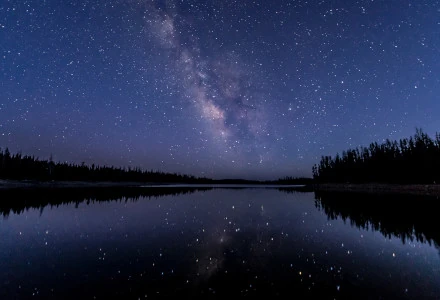

Lakes
Etymology
The word lake comes from Middle English lake ('lake, pond, waterway'), from Old English lacu ('pond, pool, stream'), from Proto-Germanic *lakō ('pond, ditch, slow moving stream'), from the Proto-Indo-European root *leǵ- ('to leak, drain'). Cognates include Dutch laak ('lake, pond, ditch'), Middle Low German lāke ('water pooled in a riverbed, puddle') as in: de:Wolfslake, de:Butterlake, German Lache ('pool, puddle'), and Icelandic lækur ('slow flowing stream'). Also related are the English words leak and leach.
There is considerable uncertainty about defining the difference between lakes and ponds, and neither term has an internationally accepted definition across scientific disciplines or political boundaries.
Distribution
The majority of lakes on Earth are freshwater, and most lie in the Northern Hemisphere at higher latitudes. Canada, with a deranged drainage system, has an estimated 31,752 lakes larger than 3 square kilometres (1.2 sq mi) in surface area. The total number of lakes in Canada is unknown but is estimated to be at least 2 million. Finland has 187,888 lakes of 500 square metres (5,400 sq ft) in area, or larger, of which 56,000 are large (10,000 square metres (110,000 sq ft) or larger).
Most lakes have at least one natural outflow in the form of a river or stream, which maintain a lake's average level by allowing the drainage of excess water. Some lakes do not have a natural outflow and lose water solely by evaporation or underground seepage, or both. These are termed endorheic lakes
Characteristics
Lakes have numerous features in addition to lake type, such as drainage basin (also known as catchment area), inflow and outflow, nutrient content, dissolved oxygen, pollutants, pH, and sedimentation.
Changes in the level of a lake are controlled by the difference between the input and output compared to the total volume of the lake. Significant input sources are precipitation onto the lake, runoff carried by streams and channels from the lake's catchment area, groundwater channels and aquifers, and artificial sources from outside the catchment area. Output sources are evaporation from the lake, surface and groundwater flows, and any extraction of lake water by humans. As climate conditions and human water requirements vary, these will create fluctuations in the lake level.